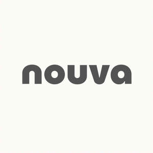

Trade Mark Journal No.2025/038 19 September 2025
UK00004252438 21 August 2025 (5,41,43)

- Class 5
- Nutritional supplements and dietary supplements; nutritional supplements, not for medical purposes; vitamin preparations; preparations containing minerals and trace elements; preparations containing fatty acids and plant extracts; dissolving or effervescent tablets used to make electrolyte replacement drinks; mineral supplements; powdered electrolyte replacement drink mix; vitamin supplements; probiotic supplements; vitamin supplement in tablet form for use in making effervescent and non-effervescent beverages when added to water; dissolving or effervescent tablets and powders for making beverages to support digestive health, cognitive functionality and overall health and wellbeing; food supplements; nutritional additives and supplements; dietary additives and supplements; meal replacement protein bars and shakes; meal replacement bar and shakes; nutritional supplement drink mix.
- Class 41
- Fitness club services; Health and fitness training; Sports and fitness; Exercise and fitness classes; Health and fitness club services; Health club [fitness] services; Exercise [fitness] training services; Fitness and exercise training services; Fitness and exercise instruction; Health club services [health and fitness training]; Fitness club services; Physical fitness consultation; Physical fitness centres; Physical fitness instruction; Physical fitness training services; Sports and fitness services; Fitness training services; Tuition in physical fitness; Physical fitness tuition; Personal trainer services [fitness training]; Personal fitness training services; Providing fitness and exercise facilities; Physical fitness centre services; Golf fitness instruction; Exercise [fitness] advisory services; Physical fitness education services; Conducting physical fitness conditioning classes; Health and wellness training; Consultancy relating to physical fitness training; Aerial fitness instruction; Physical fitness centres (Operation of -); Health club services [exercise]; Training services relating to fitness; Conducting fitness classes; Physical fitness assessment services for training purposes; Provision of health club [physical exercise] facilities; Education services relating to physical fitness; Educational services relating to physical fitness; Provision of educational health and fitness information; Instruction courses relating to physical fitness; Physical fitness instruction for adults and children; Conducting training sessions on physical fitness online; Aerobics training services; Training in yoga; Gym activity classes; Health club services; Aerobic and dance facilities; Sports training; Training in sports; Physical health education; Rental of sports or exercise equipment; Aerobics competitions; Providing health club and gymnasium services; Provision of educational services relating to fitness; Training related to nutrition; Exercise classes; Supervision of physical exercise; Gymnasium services relating to weight training; Providing of training in the field of health care and nutrition; Entertainment in the nature of weight lifting competitions; Physical training services; Strength and conditioning training; Personal coaching [training]; Life coaching (training); Providing obstacle course training gym facilities; Training services relating to health and safety; Recreation and training services; Education and training in the field of occupational health and safety; Training services relating to occupational health; Providing instruction and equipment in the field of physical exercise; Education and training services in the field of occupational health and safety; Sports club services; Training of sports players; Personal trainer services.
- Class 43
- Coffee bar services; Services for the provision of food and drink; Club services for the provision of food and drink; Provision of food and drink; Provision of food and drink in restaurants; Catering for the provision of food and drink; Provision of food and beverages; Catering services for the provision of food and drink; Takeaway food and drink services; Take-away food and drink services; Catering for the provision of food and beverages; Coffee supply services for offices [provision of beverages]; Snack bar services; Juice bar services; Corporate hospitality (provision of food and drink); Beer bar services; Providing food and drink in restaurants and bars; Providing food and drink in doughnut shops; Services for providing food and drink; Wine bar services; Wine tasting services (provision of beverages); Restaurant services for the provision of fast food; Night club services [provision of food]; Food reviewing services [provision of information about food and drinks]; Hospitality services [food and drink]; Services for the preparation of food and drink; Food and drink preparation services; Serving food and drink in doughnut shops; Serving food and drink in restaurants and bars; Office catering services for the provision of coffee; Providing food and drink in Internet cafes; Providing food and drink; Providing of food and drink; Serving food and drink in Internet cafes; Providing food and drink in bistros; Preparation and provision of food and drink for immediate consumption; Bar and restaurant services; Restaurant and bar services; Catering of food and drinks; Serving food and drinks; Information, advice and reservation services for the provision of food and drink; Catering services for the provision of food; Food and drink catering; Catering of food and drink; Catering (Food and drink -); Providing food and drink catering services for convention facilities; Salad bars [restaurant services]; Takeaway food services; Providing food and beverages; Coffee shop services; Consultancy services in the field of food and drink catering; Providing food and drink for guests; Preparation of food and drink; Serving food and drink for guests in restaurants; Serving food and drink for guests; Cafe services; Contract food services; Services for providing food.
NOUVA FITNESS GROUP LIMITED